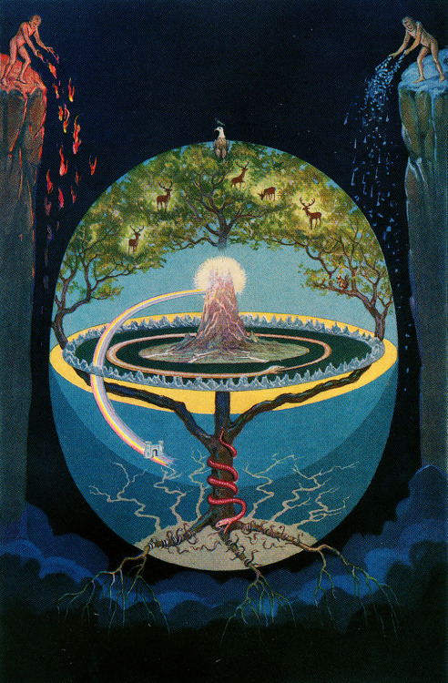
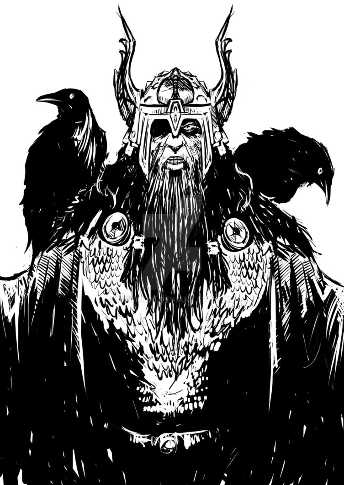
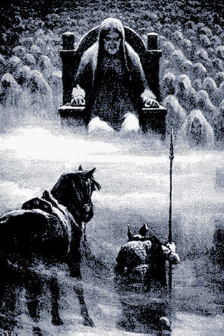

There are nine worlds in Norse Mythology, they are called Niflheim, Muspelheim, Asgard, Midgard, Jotunheim, Vanaheim, Alfheim, Svartalfheim, Helheim. The nine worlds in Norse mythology are held in the branches and roots of the world tree Yggdrasil. These realms are the home of different kind of beings, like the home of the Gods and Goddesses or giants.
In the middle of the world, high up in the sky is Asgard (Old Norse: “Ásgarðr”). It’s the home of the Gods and Goddesses. The male Gods in Asgard, are called Aesir, and the female Gods are called Asynjur. Odin is the ruler of Asgard and the chief of the Aesir. Odin is married to Frigg; and she is the Queen of the Aesir. Inside the gates of Asgard is Valhalla; it’s the place where half of the Vikings “Einherjer” that died in battle will go for the afterlife, the other half goes to Fólkvangr.
Vanaheim (Old Norse: “Vanaheimr”) is the home of the Vanir Gods. The Vanir Gods is an old branch of Gods. The Vanir are masters of sorcery and magic. They are also widely acknowledged for their talent to predict the future. Nobody knows where exactly the land, Vanaheim is located, or even how it looks like. When the war between the Aesir and the Vanir ended, three of the Vanir came to live in Asgard, Njord and his children Freya and Freyr.
Niflheim (Old Norse: “Niðavellir”) and it means (“Mist home” or “Mist World”) is the darkest and coldest region in the world according to Norse mythology. Niflheim is the first of the nine worlds and Niflheim is placed in the northern region of Ginnungagap. The eldest of the three wells are located in Niflheim which is called Hvergelmir “bubbling boiling spring” and it is protected by the huge dragon called Nidhug (Níðhöggr).
It is said that all cold rivers come from the well called Hvergelmir, and it is said to be the source of the eleven rivers in Norse mythology. The well Hvergelmir is the origin of all living and the place where every living being will go back. Elivagar “ice waves” are the rivers which existed in Niflheim at the beginning of the world. They were the streams floating out of Hvergelmir. The water from Elivagar flowed down the mountains to the plains of Ginnungagap, where it solidified to frost and ice, which gradually formed a very dense layer. This is the reason that it is very cold in the northern plains. As the world tree Yggdrasil started to grow, it stretched one of its three large roots far into Niflheim and drew water from the spring Hvergelmir.
Midgard (Old Norse: “Miðgarðr”) “middle earth” is located in the middle of the world, below Asgard. Midgard and Asgard are connected by Bifrost the Rainbow Bridge. Midgard is surrounded by a huge ocean that is impassable.
The Ocean is occupied by a huge sea serpent, the Midgard Serpent. The Midgard serpent is so huge that it encircles the world entirely, and biting its own tail. Odin and his two brothers Vili and Ve created the humans from an Ash log, the man and from an elm log, the woman.
Muspelheim (Old Norse: “Múspellsheimr”) was created far to the south of the world in Norse mythology. Muspelheim is a burning hot place, filled with lava, flames, sparks, and soot. Muspelheim is the home the of fire giants, fire demons and ruled by the giant Surtr. He is a sworn enemy of the Aesir. Surtr will ride out with his flaming sword in his hand at Ragnarok “Ragnarök” “the end of the world” Surtr will then attack Asgard, “the home of the Gods” and turn it into a flaming inferno.
Jotunheim (Old Norse: “Jötunheimr or Útgarðr”) is the home of the giants (also called Jotuns). They are the sworn enemies of the Aesir. Jotunheim consists mostly of rocks, wilderness, and dense forests, and it lies in the snowy regions on the outermost shores of the ocean. Because of this, the giants live mostly from the fish from the rivers, and the animals from the forest, because there is no fertile land in Jotunheim.
The giants and the Aesir are constantly fighting, but it also happens from time to time, that love affairs will occur. Odin, Thor and a few others, had lovers who were giants. Loki also came from Jotunheim, but he was accepted by the Aesir and lived in Asgard. Jotunheim is separated from Asgard by the river Iving, which never freezes over. Mimir’s well of wisdom is in Jotunheim, beneath the Midgard root of the ash tree Yggdrasil. The stronghold of Utgard is so big that it is hard to see the top of it. And there the feared Jotun king Utgard-Loki lives. Utgard is carved from blocks of snow and glistening icicles.
Alfheim (Old Norse: “Álfheimr or Ljósálfheimr”) is right next to Asgard in the heaven. The light elves are beautiful creatures. They are considered the “guardian angels” The God Freyr, is the ruler of Alfheim. The Light elves are minor Gods of nature and fertility; they can help or hinder humans with their knowledge of magical powers. They also often delivered an inspiration to art or music.
Svartalfheim (Old Norse: “Niðavellir or Svartálfaheimr”) is the home of the dwarves, they live under the rocks, in caves and underground. Hreidmar was the king of Svartalfheim, Svartalfheim means Dark fields. The dwarves are masters of craftsmanship. The Gods of Asgard have received many powerful gifts. Like , the magical ring Draupnir and also Gungnir, Odin’s spear.
This is where all the dishonorable dead, thieves, murderers and those the Gods and Goddesses feel is not brave enough to go to Valhalla or Folkvangr. Helheim is ruled by Hel, Helheim is a very grim and cold place, and any person who arrives here will never feel joy and happiness again. Hel will use all the dead in her realm at Ragnarök to attack the Gods and Goddesses, which will be the end of the world.